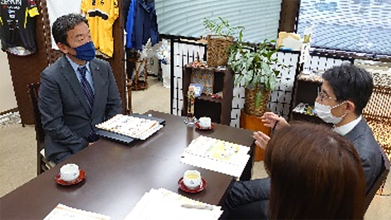
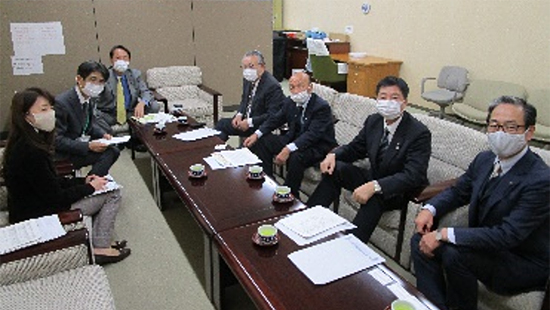
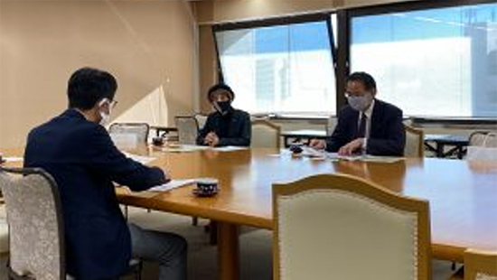

2020年度埼玉県議会各会派との懇談会報告
コロナ禍における生活困窮者支援の取り組みなどについて懇談しました
生協への理解を深め、意見交換を行う場として埼玉県議会3会派との懇談会を実施し、3会派8人の県議会議員が参加しました。今年度は新型コロナウイルス感染症による2回目の緊急事態宣言とも重なり、少人数、短時間での開催など、感染防止対策を行いながら開催しました。
無所属改革の会議員との懇談
- 日時
- 2020年12月14日(月)14時00分～14時30分
- 場所
- 埼玉県議会無所属県民会議控室
- 参加者
- 無所属改革の会 中川浩県議
埼玉県生協連 吉川尚彦会長理事、大久保常務理事、加藤
懇談内容（抜粋）
- 埼玉県生協連会員生協の経営概況について
- コロナ禍におけるフードバンクなど生活困窮者支援の取り組みについて

埼玉県議会自由民主党議員団役員との懇談
- 日時
- 2021年1月7日(木)14時00分～14時20分
- 場所
- 埼玉県議会自由民主党議員団応接室
- 参加者
- 自民党県議団 小島信昭県議、神尾髙善県議、岡地優県議、木下高志県議、中屋敷慎一県議
埼玉県生協連 吉川尚彦会長理事、大久保常務理事、加藤
懇談内容（抜粋）
- 埼玉県生協連会員生協の経営概況について
- 新型コロナウイルス感染症の対策について

日本共産党埼玉県議団議員との懇談
- 日時
- 2021年1月19日(火)13時30分～14時00分
- 場所
- 日本共産党埼玉県議団控室
- 参加者
- 日本共産党県議団柳下礼子県議、村岡正嗣県議
埼玉県生協連 吉川尚彦会長理事、大久保常務理事、加藤
懇談内容（抜粋）
- 埼玉県生協連会員生協の経営概況について
- 地域を支える生協の助け合いの活動について
